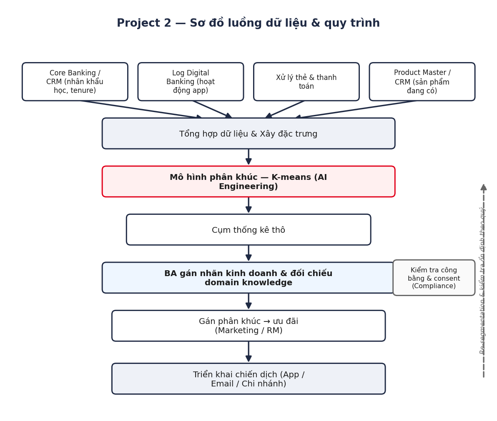
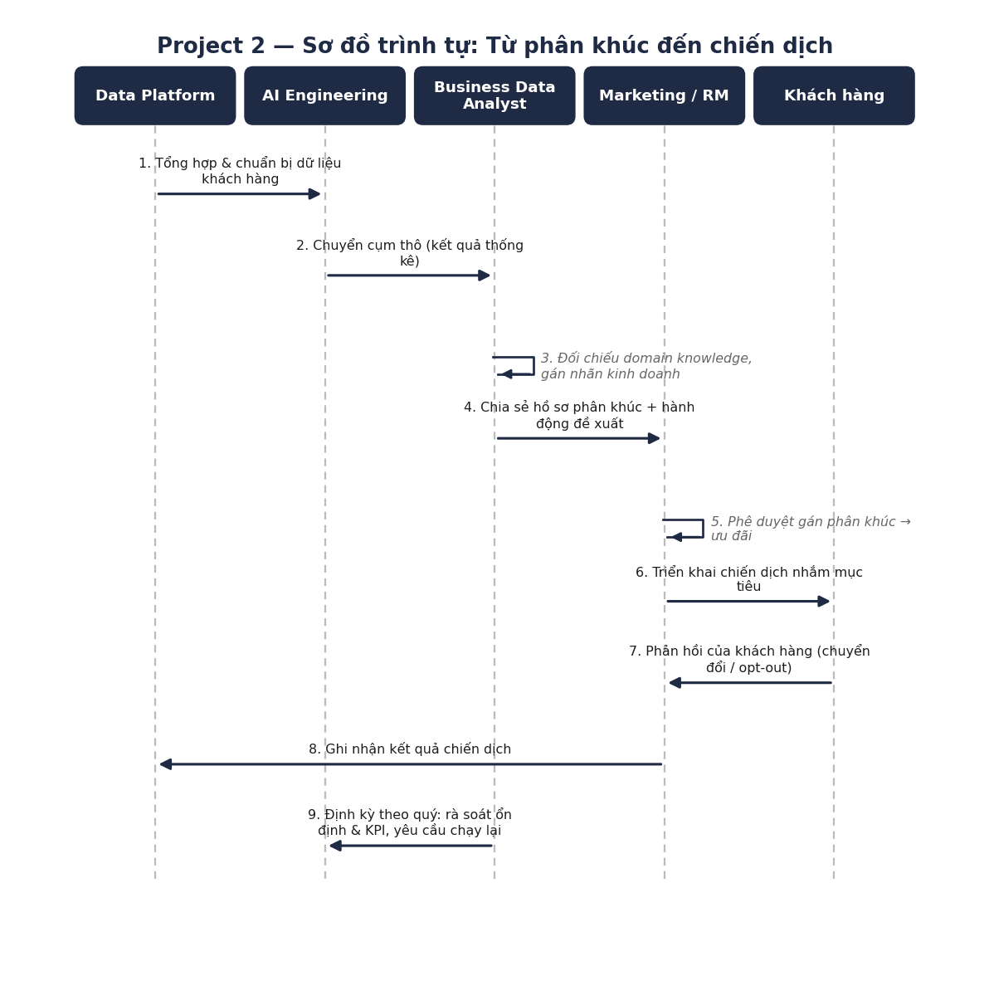
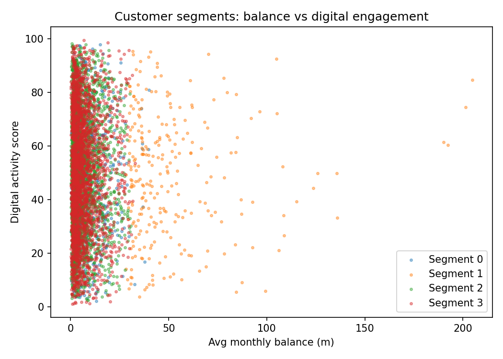
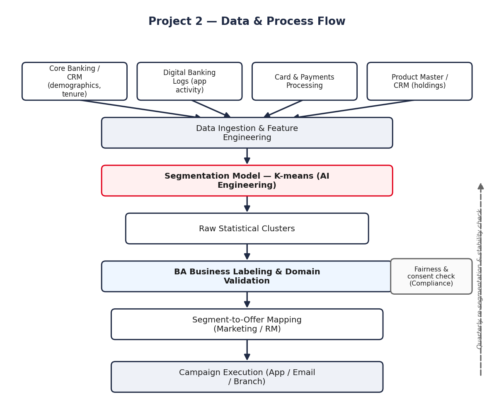
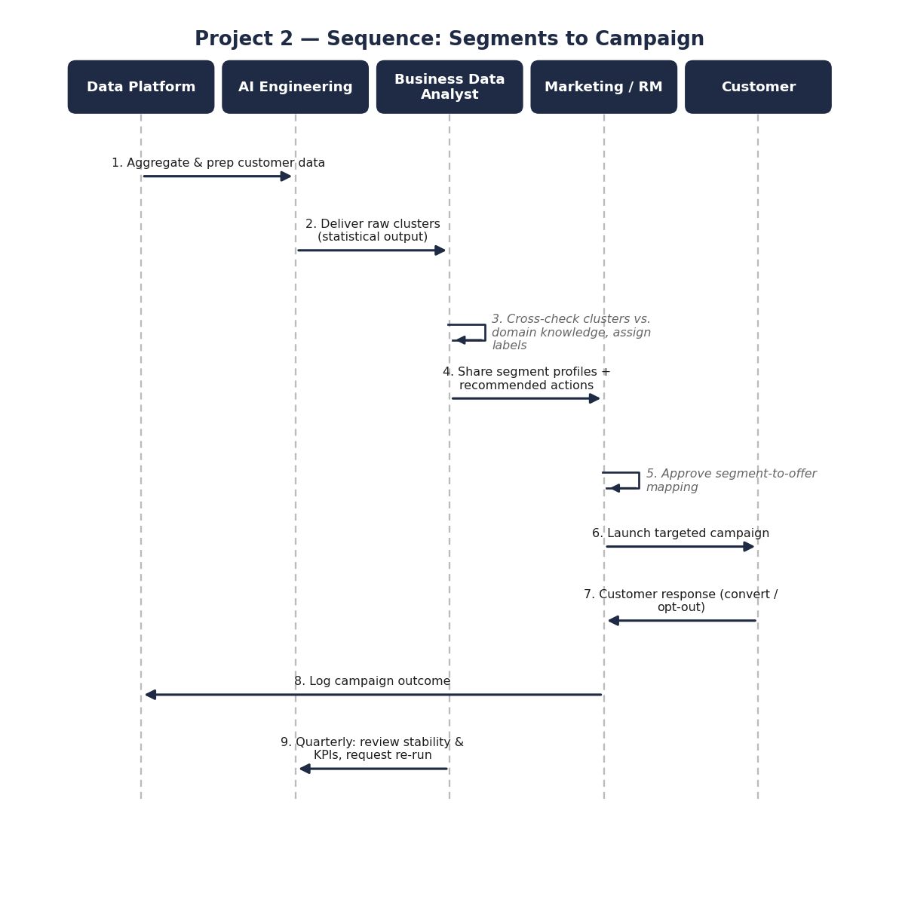

Phân khúc khách hàng & Nhắm mục tiêu Cross-sell bằng AI
Bản demo portfolio — Business Data Analyst (AI Products) | Thực hiện bởi Kevin Ngo
1. Bối cảnh kinh doanh & Vấn đề cần giải quyết
Các đội Marketing/RM chạy chiến dịch cross-sell dựa trên các quy tắc phân khúc theo nhân khẩu học rộng, không phản ánh đúng hành vi thực tế. Điều này dẫn đến các ưu đãi chung được gửi sai đối tượng — khách hàng giàu nhưng chưa được chăm sóc đúng mức nhận quảng cáo vay đại trà, trong khi khách hàng năng động trên digital, dễ chuyển đổi sang thẻ tín dụng lại không nhận được gì.
Mục tiêu kinh doanh: nhóm khách hàng thành các phân khúc hành vi riêng biệt để Marketing/RM có thể nhắm đến từng nhóm bằng ưu đãi sản phẩm phù hợp nhất (next-best-product).
2. Giả thuyết phân tích & Tiêu chí thành công
- Giả thuyết: khách hàng phân thành các nhóm hành vi có thể phân biệt được dựa trên số dư, mức độ tương tác digital, độ sâu sản phẩm, và thời gian gắn bó — tương ứng với các chiến lược cross-sell khác nhau, có thể hành động được.
- Tiêu chí thành công (kinh doanh): mỗi phân khúc phải đủ lớn để triển khai chiến dịch riêng, gắn với một ưu đãi cụ thể, và được Marketing/RM xác nhận.
- Tiêu chí thành công (phân tích): các cụm phân biệt được về hành vi và ổn định trong ít nhất một chu kỳ chiến dịch.
- Ngoài phạm vi: chấm điểm propensity ở cấp độ cá nhân — kết quả này chỉ định hướng chiến lược nhắm mục tiêu ở cấp độ phân khúc.
3. Yêu cầu dữ liệu
| Thực thể dữ liệu | Thuộc tính chính | Hệ thống nguồn |
|---|---|---|
| Thông tin nhân khẩu học khách hàng | tuổi, thời gian gắn bó với ngân hàng | Core Banking / CRM |
| Số dư tài khoản | số dư trung bình hàng tháng | Core Banking (deposit ledger) |
| Tương tác digital | điểm hoạt động trên app di động | Log nền tảng digital banking |
| Hành vi giao dịch | số giao dịch trung bình mỗi tháng | Hệ thống xử lý thẻ/thanh toán |
| Sản phẩm đang sở hữu | có tiết kiệm / thẻ tín dụng / đầu tư | Product Master / CRM |
4. Sơ đồ luồng dữ liệu & quy trình
Sơ đồ tổng thể cho thấy dữ liệu đi từ các hệ thống nguồn, qua mô hình phân khúc AI, đến bước BA gán nhãn kinh doanh và Marketing/RM triển khai chiến dịch — và sơ đồ trình tự mô tả cụ thể vai trò từng bên trong quy trình đó.

Hình 2. Sơ đồ luồng dữ liệu & quy trình xử lý.

Hình 3. Sơ đồ trình tự từ phân khúc đến chiến dịch.
5. Prototype & Đánh giá (MVP)
Bộ dữ liệu giả lập (6.000 khách hàng) được phân cụm bằng K-means (k=4, chuẩn hoá đặc trưng) để kiểm chứng phương pháp ở giai đoạn MVP.
| Phân khúc | Đặc điểm | % trên tổng | Hành động đề xuất |
|---|---|---|---|
| A — Khách hàng mới, giàu có | Số dư cao nhất (~52 triệu), thời gian gắn bó ngắn (~3 năm), tỷ lệ nắm giữ đầu tư thấp | 4.4% | Ưu tiên tư vấn wealth/đầu tư |
| B — Khách hàng lâu năm, ổn định | Số dư trung bình, thời gian gắn bó dài nhất (~10 năm), tỷ lệ nắm giữ đầu tư thấp | 14.6% | Đào sâu quan hệ qua RM |
| C — Khách hàng digital lâu năm | Lớn tuổi hơn (~46), hoạt động digital cao, độ sâu sản phẩm mỏng | 37.9% | Cross-sell thẻ tín dụng / vay tiêu dùng qua ưu đãi trên app |
| D — Khách hàng trẻ, ưu tiên digital | Trẻ nhất (~27), hoạt động digital cao, độ sâu sản phẩm mỏng | 43.2% | Thẻ tín dụng cấp cơ bản + tính năng mục tiêu tiết kiệm |

Hình 1. Các phân khúc khách hàng theo số dư trung bình và điểm tương tác digital.
6. Hạn chế & Rủi ro
- Dữ liệu giả lập — cần re-cluster và validate lại với dữ liệu thật cùng Marketing/RM.
- Cụm có thể không ổn định: cần định kỳ re-segmentation (ví dụ theo quý).
- Rủi ro về công bằng: cần kiểm tra để không bỏ sót nhóm khách hàng ít hoạt động digital/số dư thấp.
- Cần xác nhận cơ sở consent cho việc sử dụng dữ liệu hành vi trong marketing analytics.
7. Khung KPI / Metrics
| KPI | Tần suất | Chủ trì |
|---|---|---|
| Độ ổn định phân khúc | Hàng quý | Đội Data/AI |
| Tỷ lệ chuyển đổi chiến dịch theo phân khúc | Theo từng chiến dịch | Marketing |
| Độ sâu sản phẩm cross-sell | Hàng quý | Business/Product |
| Tỷ lệ opt-out / khiếu nại | Theo từng chiến dịch | Marketing/CX |
| Tăng trưởng doanh thu | Hàng quý | Business/Finance |
AI-driven Customer Segmentation & Cross-sell Targeting
Portfolio demo — Business Data Analyst (AI Products) | Prepared by Kevin Ngo
1. Business Context & Problem Statement
Marketing/RM teams run cross-sell campaigns using broad demographic rules that don't capture actual behavior. This leads to generic offers sent to the wrong customers — wealthy but under-served customers get mass-market loan ads, while digitally active customers who'd convert well on a credit card get nothing.
Business objective: group the customer base into behaviorally distinct segments so Marketing/RM can target each with a relevant next-best-product offer.
2. Analytical Hypothesis & Success Criteria
- Hypothesis: customers cluster into distinguishable behavioral groups based on balance, digital engagement, product depth, and tenure — mapping to different, actionable cross-sell strategies.
- Success criteria (business): each segment must be large enough to justify a campaign, mapped to a specific offer, and validated by Marketing/RM.
- Success criteria (analytical): clusters behaviorally separable and stable across at least one campaign cycle.
- Out of scope: individual-level propensity scoring — this informs segment-level targeting strategy only.
3. Data Requirements
| Entity | Key attributes | Source system |
|---|---|---|
| Customer demographics | age, tenure with bank | Core Banking / CRM |
| Account balances | average monthly balance | Core Banking (deposit ledger) |
| Digital engagement | mobile app activity score | Digital banking platform logs |
| Transaction behavior | avg. transactions per month | Card/Payments processing |
| Product holding | has savings / credit card / investment | Product Master / CRM |
4. Data & Process Flow Diagrams
The overall diagram shows how data flows from source systems through the AI segmentation model to the BA business-labeling step and Marketing/RM campaign execution — and the sequence diagram details each party's role in that process.

Figure 2. Data & process flow diagram.

Figure 3. Sequence diagram from segments to campaign.
5. Prototype & Evaluation (MVP)
Synthetic dataset (6,000 customers) clustered using K-means (k=4, standardized features) to validate the approach as an MVP.
| Segment | Profile | % of base | Recommended action |
|---|---|---|---|
| A — Affluent newcomer | Highest balance (~52M), short tenure (~3y), low investment holding | 4.4% | Priority wealth/investment advisory |
| B — Stable long-tenure | Moderate balance, longest tenure (~10y), low investment holding | 14.6% | Relationship deepening via RM |
| C — Established digital user | Older (~46y), high digital activity, thin product depth | 37.9% | Credit card / personal loan via app offers |
| D — Young digital-first | Youngest (~27y), high digital activity, thin product depth | 43.2% | Entry-level credit card + savings-goal features |
Figure 1. Customer segments plotted by average balance vs. digital engagement score.
6. Limitations & Risks
- Synthetic data — must re-cluster and validate against real data together with Marketing/RM.
- Cluster instability: needs a defined re-segmentation cadence (e.g., quarterly).
- Fairness risk: needs a check to avoid overlooking lower-balance/less digitally active customers.
- Must confirm the consent basis for using behavioral data in marketing analytics.
7. KPI / Metrics Framework
| KPI | Cadence | Owner |
|---|---|---|
| Segment stability | Quarterly | Data/AI team |
| Campaign conversion rate by segment | Per campaign | Marketing |
| Cross-sell product depth | Quarterly | Business/Product |
| Opt-out / complaint rate | Per campaign | Marketing/CX |
| Revenue uplift | Quarterly | Business/Finance |